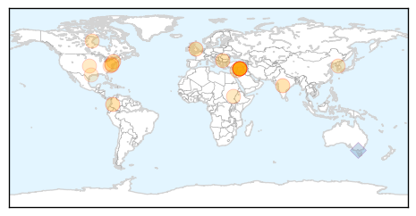

Unknown
30-Day Web Trend
0 alerts, 0 warnings

30-Day Twitter Trend
0 alerts, 0 warnings

Article Locations
Article Confidences

Top Articles:
- 0.955
- Alert as scarlet fever breaks out across Nottinghamshire
- 0.949
- Colombia Reports First Suspected Cases of PED
- 0.917
- Chicago Tribune
- 0.917
- Chicago Tribune
- 0.917
- Chicago Tribune
- 0.903
- Parents on red alert over Scarlet fever
- 0.866
- Russia says U.N. draft to reject Crimea referendum unacceptable
- 0.866
- US Secretary of Agriculture Tom Vilsack confers with Reps Aderholt and Rogers before a House Appropriations Subcommittee in Washington
- 0.866
- US Secretary of Agriculture Vilsack confers with Dr Galuber before House Appropriations Subcommittee in Washington
- 0.866
- Britain says U.S., Russian talks on Ukraine to be "formidably difficult"
- 0.866
- Crimea eyes energy firm privatisation, possible sale to Russia
- 0.866
- Russia accuses US of discrimination against Russian journalists
- 0.866
- Chemical weapons to be destroyed outside Syria could be removed by April 13-RIA
- 0.793
- Killer pig virus hits US pork producers
- 0.767
- U.N. sends three experts to N. Korea over FMD: report
- 0.720
- South Sudan: Life-saving surgery for victims of fighting
- 0.681
- South Sudan: Life-saving surgery for victims of fighting
- 0.660
- The Failures Of Google Flu Trends Show What's Wrong With Big Data
- 0.616
- 4 die at Minn. veterans home after stomach illness
- 0.593
- Hospital Checkups: New initiative at Cincinnati Children's helps doctors keep bad bacteria at bay
- 0.533
- Rare female-to-female HIV Transmission case reported in US
- 0.504
- More Emergency Medical Aid Headed to Syria
Top Tweets:
- 0.845
- Flu Fact Friday: The infleunza virus is only 120 nanometers in diameter, or 0.000012 centimeters.
- 0.777
- RT: Este es un día de bendición y lo gozaremos en el Señor.
- 0.652
- RT: Antibiotics are not effective against viral infections like the flu. Learn what to do if you have the flu. http://t.co/auaeY0d…
West Nile Virus
30-Day Web Trend
2 alerts, 0 warnings
30-Day Twitter Trend
0 alerts, 0 warnings

Article Locations

Article Confidences

Top Articles:
-
No articles found for Mar 14, 2014
Top Tweets:
-
No tweets found for Mar 14, 2014